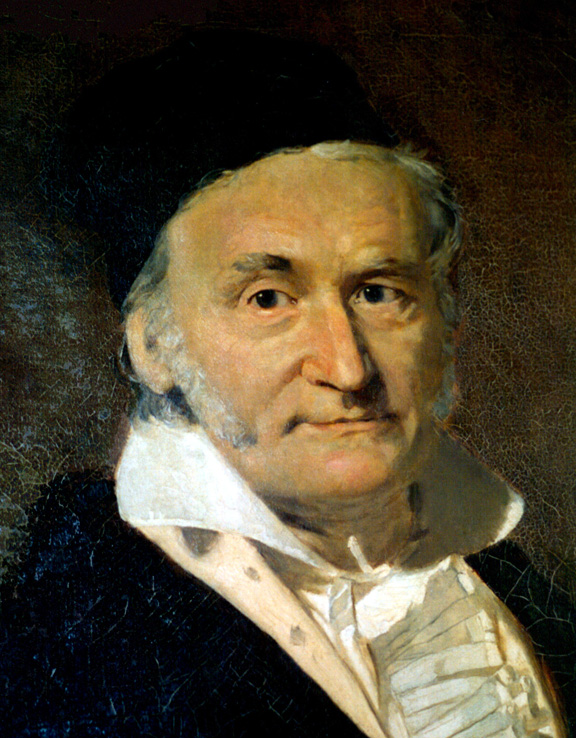

Краткая биография Колмогорова

Андре́й Никола́евич Колмого́ров (урождённый Катаев, 12 (25) апреля 1903, Тамбов — 20 октября 1987, Москва) — русский советский математик, один из крупнейших математиков ХХ века.
Колмогоров — один из основоположников современной теории вероятностей, им получены основополагающие результаты в топологии, геометрии, математической логике, классической механике, теории турбулентности, теории сложности алгоритмов, теории информации, теории функций, теории тригонометрических рядов, теории меры, теории приближения функций, теории множеств, теории дифференциальных уравнений, теории динамических систем, функциональном анализе и в ряде других областей математики и её приложений.
Колмогоров также автор новаторских работ по философии, истории, методологии и преподаванию математики, известны его работы в статистической физике (в частности, уравнение Джонсона — Мела — Аврами — Колмогорова).
Профессор Московского государственного университета (с 1931 года), доктор физико-математических наук, академик Академии наук СССР (1939 год). Президент Московского математического общества (ММО) в 1964—1966 и 1974—1985. Герой Социалистического Труда (1963 год).
Иностранный член Национальной академии наук США (1967), Лондонского королевского общества (1964), член Германской академии естествоиспытателей «Леопольдина» (1959), Французской (Парижской) академии наук (1968), почётный член Американской академии искусств и наук (1959), иностранный член Венгерской академии наук (1965), Польской академии наук (1956), Нидерландской королевской академии наук (1963), АН ГДР (1977), Академии наук Финляндии (1985), почетный член Румынской академии. Член Лондонского математического общества (1962), Индийского математического общества (1962), иностранный член Американского философского общества (1961). Колмогоров — почётный доктор Парижского университета (1955), Стокгольмского университета (1960), Индийского статистического института в Калькутте (1962).
Краткая биография Гаусса
Карл Фридрих Гаусс (нем. Johann Carl Friedrich Gauß) (1777-1855) — немецкий математик, механик, астроном, геодезист и физик, иностранный член-корреспондент (1802) и иностранный почетный член (1824) Петербургской АН. Знак зодиака — Телец.
Для творчества Гаусса характерна органическая связь между теоретической и прикладной математикой, широта проблематики. Труды Гаусса оказали большое влияние на развитие алгебры (доказательство основной теоремы алгебры), теории чисел (квадратичные вычеты), дифференциальной геометрии (внутренняя геометрия поверхностей), математической физики (принцип Гаусса), теории электричества и магнетизма, геодезии (разработка метода наименьших квадратов) и многих разделов астрономии.
Карл Гаусс родился 30 апреля 1777 года в Брауншвейге, ныне Германия. Еще при жизни он был удостоен почетного титула «принц математиков». Он был единственным сыном бедных родителей. Школьные учителя были так поражены его математическими и лингвистическими способностями, что обратились к герцогу Брауншвейгскому с просьбой о поддержке, и герцог дал деньги на продолжение обучения в школе и в Геттингенском университете (в 1795-1798). Степень доктора Гаусс получил в 1799 в университете Хельмштедта.
Первое же обширное сочинение Гаусса «Арифметические исследования» (опубликовано в 1801) на многие годы определило последующее развитие двух важных разделов математики — теории чисел и высшей алгебры. Из множества важных и тонких результатов, приведенных в «Арифметических исследованиях», следует отметить подробную теорию квадратичных форм и первое доказательство квадратичного закона взаимности. В конце сочинения Гаусс приводит полную теорию уравнений деления круга и, указывая их связь с задачей построения правильных многоугольников, решает стоявшую с античных времен проблему о возможности построения циркулем и линейкой правильного многоугольника с заданным числом сторон. Математик указал все числа, при которых построение правильного многоугольника с помощью циркуля и линейки возможно. Это пять так называемых гауссовых простых чисел: 3, 5, 17, 257 и 65337, а также умноженные на любую степень двойки произведения различных (не повторяющихся) гауссовых чисел. Например, построить с помощью циркуля и линейки правильный (3х5х17)-угольник можно, а правильный 7-угольник нельзя, так как семерка не гауссово простое число.
Разумеется, доказанный Гауссом результат — пример так называемой чистой теоремы существования; утверждается, что построить с помощью циркуля и линейки правильный многоугольник с «допустимым» числом сторон можно, но ничего не говорится о том, как это сделать. Карл предложил также явный способ построения с помощью циркуля и линейки правильного 17-угольника. Это событие ученый посчитал столь значительным, что отметил его в «Дневнике» (запись от 30 марта 1796) и завещал высечь правильный 17-угольник на своем надгробии (воля Гаусса была исполнена).
С именем Гаусса также связана основная теорема алгебры, согласно которой число корней многочлена (действительных и комплексных) равно степени многочлена (при подсчете числа корней кратный корень учитывается столько раз, какова его степень). Первое доказательство основной теоремы алгебры Гаусс дал в 1799, а позднее предложил еще несколько доказательств.
Гаусс живо интересовался не только «чистой математикой», но и ее приложениями. В области прикладной математики он не только получил ряд важных результатов, но и создал новые направления в науке.
Занимая с 1807 года кафедру математики и астрономии Геттингенского университета и возглавляя астрономическую обсерваторию того же университета, Карл Гаусс на протяжении более двух десятилетий занимается изучением орбит малых планет и их возмущений. Мировую известность обрел разработанный Гауссом метод определения эллиптической орбиты по трем наблюдениям. Применение этого метода к малой планете Церера позволило вновь найти ее на небе после того, как она была утеряна вскоре после ее открытия астрономом Дж. Пиацци (1801). Не меньший успех сопутствовал применению метода Гаусса к другой малой планете, Палладе (1802).
В 1809 году вышел фундаментальный труд Гаусса «Теория движения небесных тел», в котором изложены методы вычисления планетных орбит, используемые (с незначительными усовершенствованиями) и поныне.
В 1812 Гаусс познакомил математический мир со своей гипергеометрической функцией, частным случаем которой являются многие из так называемых специальных функций математической физики. В той же работе он рассматривает и вопросы сходимости бесконечных рядов, важные для астрономических вычислений.
В 1818 Карл Гаусс одним из первых начинает размышлять над созданием неевклидовой геометрии, но от публикации полученных результатов воздерживается, опасаясь, по собственному признанию, «криков беотийцев» (т.е. возражений и насмешек невежд).
Десятилетие 1820-30 застает Гаусса за проведением геодезической съемки Ганноверского королевства и составлением его подробной карты. Гаусс не только проделывает огромную организационную работу и руководит измерением длины дуги меридиана от Геттингена до Альтоны, но и создает основы «высшей геодезии», занимающейся описанием действительной формы земной поверхности. Обобщающий труд «Исследования о предметах высшей геодезии» Гаусс создает в 1842-1847. В основе этого фундаментального труда лежат также принадлежащие Гауссу идеи так называемой внутренней геометрии поверхности, изложенной им в сочинении «Общие исследования о кривых поверхностях» (1827).
Локальные (т. е. характеризующие малую окрестность точки) свойства поверхности, по мысли Гаусса, естественнее связывать не с «посторонними», введенными извне, а с внутренними криволинейными координатами и выражать через дифференциальную форму от внутренних координат. Если поверхность изгибать не растягивая, то ее внутренние свойства остаются неизменными. Впоследствии по образу и подобию внутренней геометрии поверхностей Гаусса была создана многомерная риманова геометрия.
Непреходящее значение для всех наук, имеющих дело с обработкой наблюдений, имеют разработанные Гауссом методы получения наиболее вероятных значений измеряемых величин. Особенно широкую известность получил созданный Гауссом в 1821-1823 гг. метод наименьших квадратов. Гауссом заложены также и основы теории ошибок.
В 1830-1840 годы Гаусс много внимания уделяет проблемам физики. В 1832 он создает так называемую абсолютную систему единиц, приняв за основные три единицы; единицу времени 1 с, единицу длины 1 мм и единицу массы 1 м. В 1833 в тесном сотрудничестве с Вильгельмом Вебером Гаусс строит первый в Германии электромагнитный телеграф. В 1839 выходит сочинение Гаусса «Общая теория сил притяжения и отталкивания, действующих обратно пропорционально квадрату расстояния», в которой излагает основные положения теории потенциала и доказывает знаменитую теорему Гаусса—Остроградского. Работа «Диоптрические исследования» (1840) Гаусса посвящена теории построения изображений в сложных оптических системах.